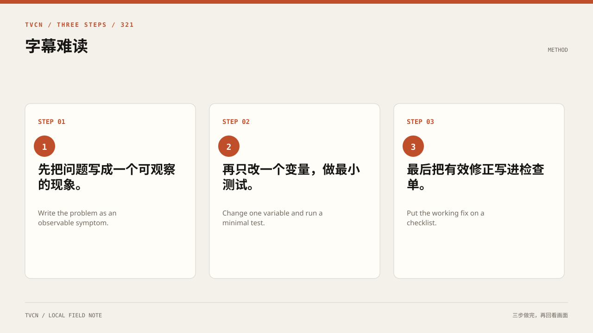

先查四项
- 行长：每行超过 18 个汉字，或一行塞两种语言。拆句，不要缩字号。
- 对比：白字压在天空、白墙或人脸高光上。加半透明底、描边或阴影，先保证可读。
- 停留：一句话只停 0.8 秒。按每秒 4–6 个汉字控制，长句拆成两条。
- 安全区：字幕贴底边，被平台 UI 遮住。上移到画面高度 10% 以内。
一个手机测试
把成片缩到手机宽度，亮度调到 50%，静音看 30 秒。你能在不停顿的情况下读完吗？再把背景换成最亮的镜头，确认字幕仍然清楚。
什么时候不要用自动字幕
人名、术语、方言、数字和否定句，自动字幕最容易错。没有人工校对，不要直接交付。错一个字，观众就会怀疑整条片。
DIAGRAM / Method card
三步流程

现场
减字数、提对比、避开嘴和手；每行 16 字以内。
怎么做
- 每行压到十二到十六个汉字，或三十二到四十二个英文字符，最多两行。
- 放在安全区上方，避开嘴、手和平台界面。
- 用半透明底或轻阴影提高对比，不要描粗到糊。
别踩
别把台词全打出来；字幕是护栏，不是逐字稿。
图片说明：本页封面、图解与步骤图是编辑示意或结构图，不是本页实测照片，也不能当作器材测试证据；AI 辅助生成的图会在图注标出。判断器材或画面，以正文的测试条件与现场记录为准。